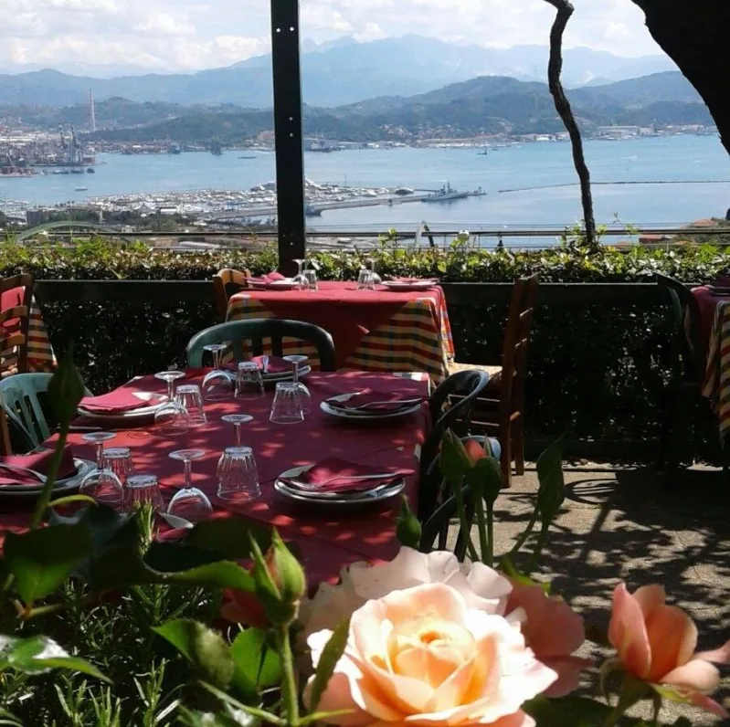
Cucina casalinga · Fabiano Alto
Il golfo lo vedete dal tavolo.
Cozze, pesce fresco e primi di mare in un'osteria di famiglia, sopra La Spezia, con la terrazza affacciata sul Golfo dei Poeti. A cena da martedì a domenica.
Mar–Dom, a cena dalle 19:30
- Terrazza sul Golfo dei PoetiSi cena all'aperto con tutta La Spezia e il porto sotto di voi.
- La specialità: le cozzeSempre freschissime, insieme al pesce del giorno e ai primi di mare.
- Osteria di famigliaAmbiente semplice, cucina tipica locale e regionale, porzioni abbondanti.
Spaghetti alle cozze in bianco Consigliato
prezzo da inserireCon le cozze, la specialità della casa.
Suggerisco assolutamente
, scrive una cliente su Tripadvisor.Carbonara di mare
prezzo da inserireMolto buona
, da una cena di compleanno raccontata su Tripadvisor.Linguine al sugo di scorfano
prezzo da inserireMolto saporite
, sempre dalla stessa recensione.Linguine con la rana pescatrice
prezzo da inserireMolto buone
, secondo una cliente su Google.Paccheri ai frutti di mare
prezzo da inserireCitati da un cliente arrivato dalla Svezia, insieme alla vista.
Acciughe marinate Da provare
prezzo da inserireIl classico del golfo.
Da provare
, consiglia Salvatore T. su Google.Antipasti della casa
prezzo da inserireSemplici e freschi:
buoni, freschi e molto economici
, dice una recensione su Tripadvisor.
Orata arrosto Pesce
prezzo da inserireIntera, con pomodorini e limone. Un altro dei piatti
da provare
secondo chi è stato qui.Frittura di mare Pesce
prezzo da inserireFrittura ben fritta
, scrive una cliente su Google.Baccalà Pesce
prezzo da inserireConsigliato insieme agli spaghetti alle cozze in una recensione su Tripadvisor.
Ravioli al ragù
prezzo da inserirePer chi a tavola non vuole il pesce.
Carne
prezzo da inserireOttima carne
, accompagnata da un vino rosso locale, racconta Brunella M. su Google.
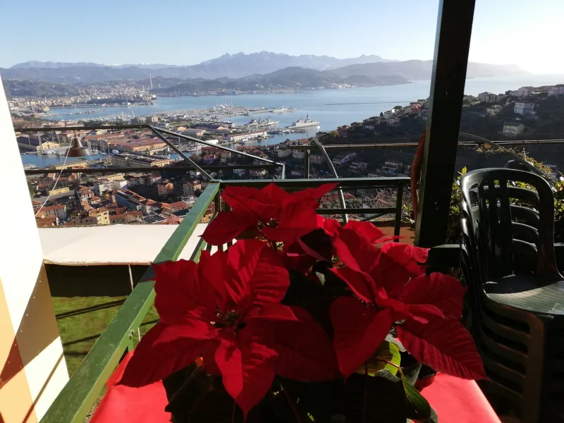
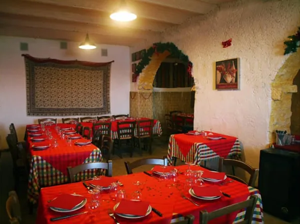
La terrazza
D'estate in terrazza, d'inverno in sala.
Siamo a Fabiano Alto, un borgo sulla collina sopra La Spezia, in Via Sant'Andrea. Un'osteria a conduzione familiare: tovaglie rosse, archi in pietra e una terrazza panoramica affacciata sul Golfo dei Poeti, dove si cena anche al tramonto.
«Un posto dove sembra davvero di assaporare la Liguria in tutte le sue sfaccettature: panorama, prodotti locali e cucina semplice ma fatta bene.»— David B., recensione su Google
L'osteria
La vista, i piatti, la sala.
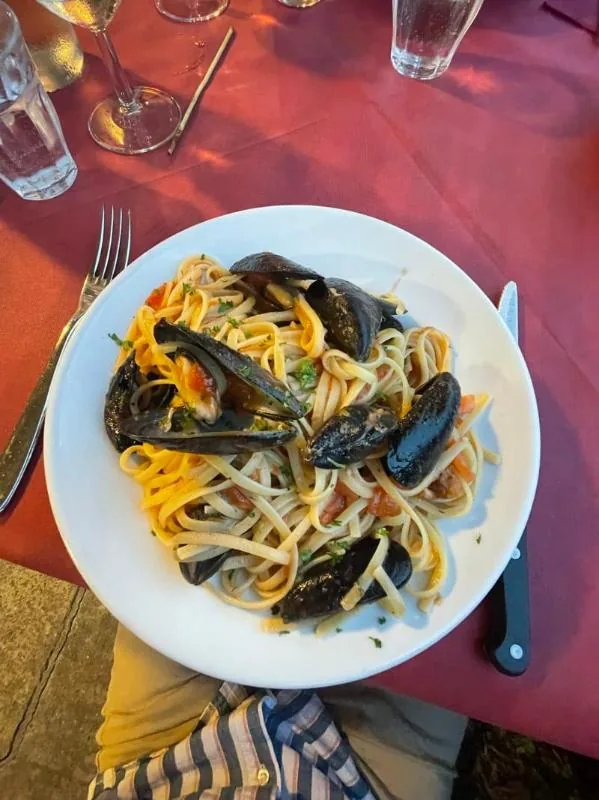
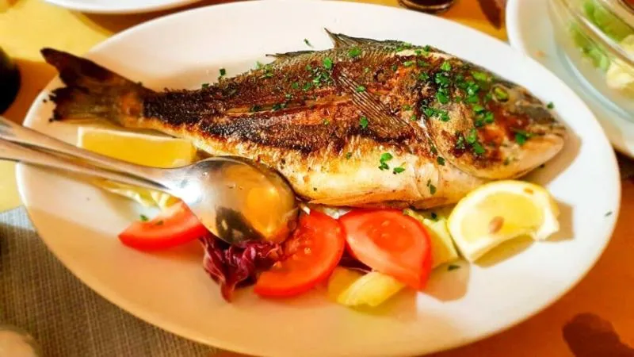
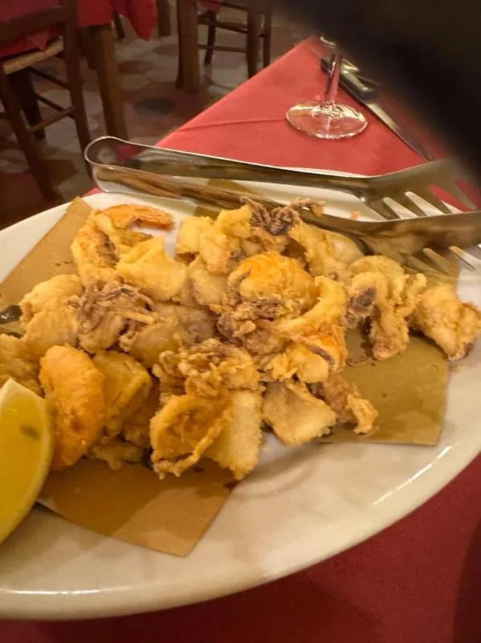
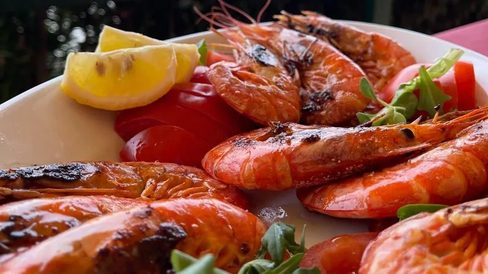
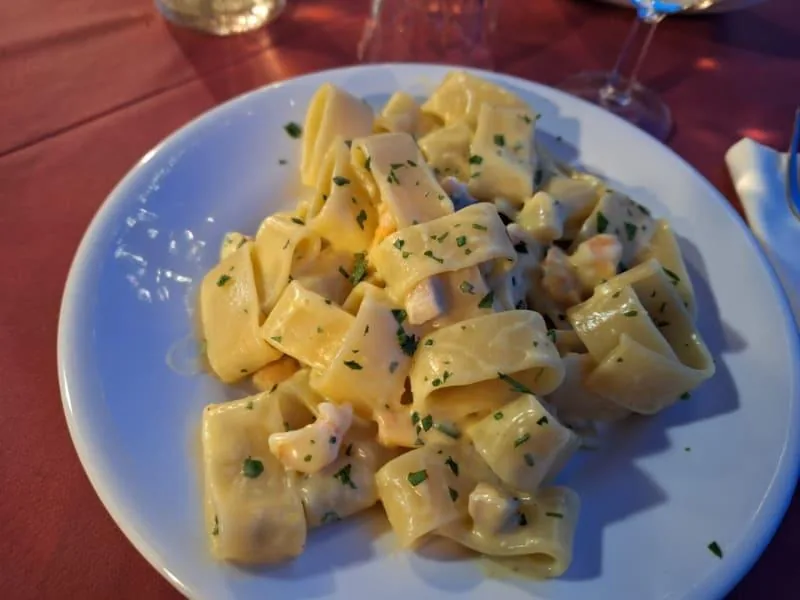
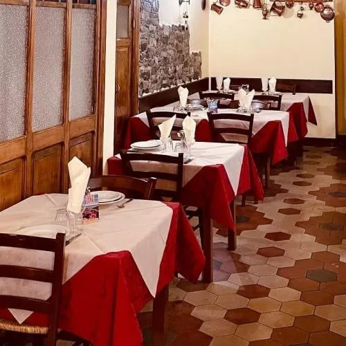
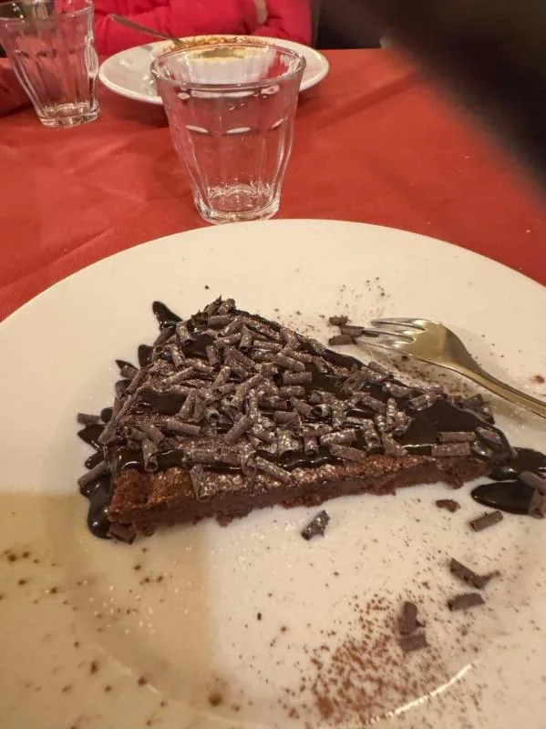
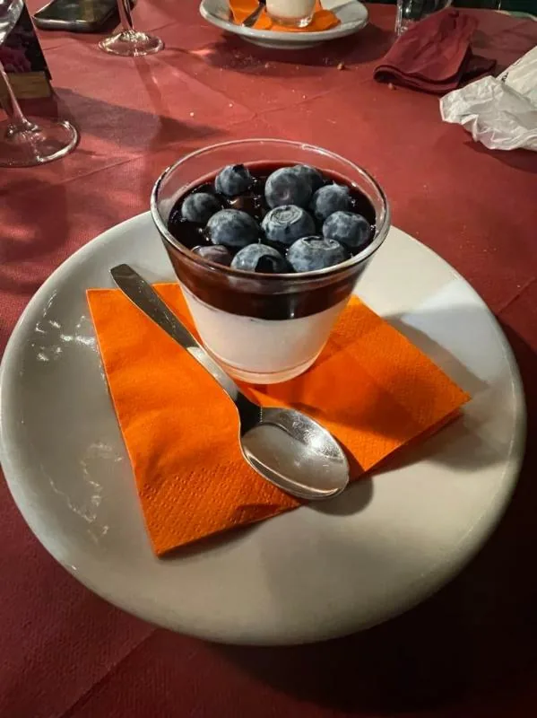
Dicono di noi
La vista porta su, la cucina fa tornare.
- Vista sul golfo
- Porzioni abbondanti
- Prezzi onesti
- Titolare gentile
«Cucina ottima, pesce fresco, ottima vista sul Golfo della Spezia. Accoglienza e rapporto qualità prezzo al top. Da provare le acciughe marinate e l'orata arrosto.»
«Ho festeggiato qui con un gruppo di amiche i miei 60 anni. Bellissima location con un panorama stupendo. Ottimo cibo e personale ai tavoli presenti ed educati.»
«Ristorante situato a 10 minuti di auto da La Spezia. Si gode di una vista bellissima su tutto il golfo. Il cibo è ottimo, con porzioni super abbondanti. Proprietario super gentile.»
Prenota
Vi teniamo un tavolo in terrazza.
Scegliete giorno, ora e quante persone siete: il messaggio parte su WhatsApp già scritto e vi rispondiamo noi. Per la sera stessa conviene chiamare.
Compleanni, comunioni, matrimoni.
Prepariamo menù per cerimonie, comunioni e compleanni, e il locale ospita anche matrimoni ed eventi. Diteci quanti siete e che data avete in mente.
- Menù per compleanni
- Menù per cerimonie
- Menù per comunioni
- Matrimoni ed eventi
Orari e dove
Ci trovate a Fabiano Alto.
- LunedìChiuso
- Martedì19:30–22:30
- Mercoledì19:30–22:30
- Giovedì19:30–22:30
- Venerdì19:30–22:30
- Sabato19:30–22:30
- Domenica19:30–22:30
Per il pranzo e per le feste si prenota: chiamateci e ci organizziamo.
- In auto: una decina di minuti dalla città, salendo verso Fabiano. A cinque minuti dallo stadio e dal centro storico.
- Parcheggio: lungo la strada. In settimana si trova facilmente, nel fine settimana conviene arrivare con un po' di anticipo.
- A piedi: dalla stazione centrale sono circa 45 minuti in salita. C'è anche l'autobus.
19123 Fabiano Alto (SP)
Sulla collina sopra La Spezia, con vista sul golfo.